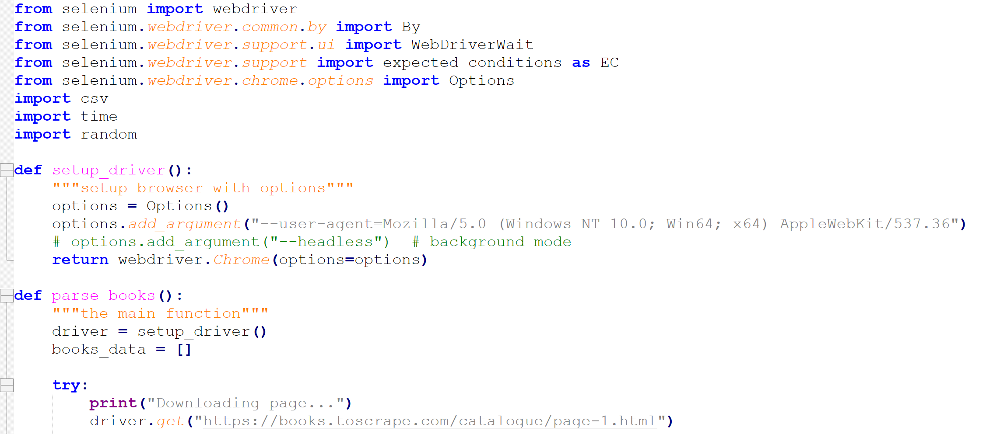
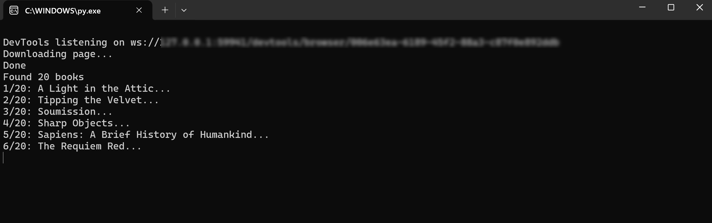
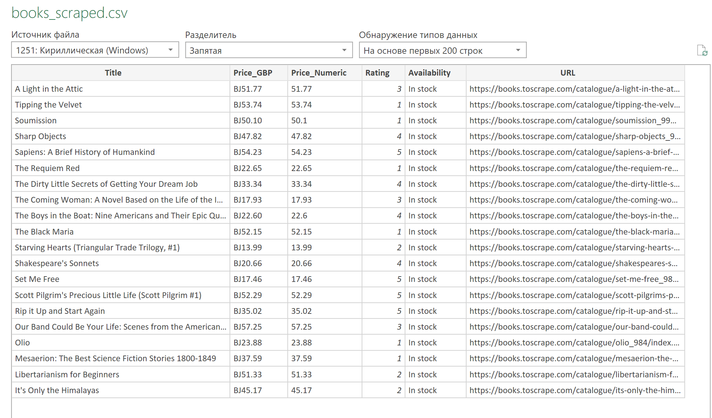

| Задача | До | После | Экономия |
|---|---|---|---|
| Еженедельные отчёты | 8 ч | 3 ч | −62% |
| Ежемесячные сводки | 6 ч | 2 ч | −67% |
| Парсинг данных | 4 ч | 1 ч | −75% |
| Консолидация отчётов | 2 ч | 6 мин | −95% |
| ИТОГО | 20 ч/нед | 12 ч/нед | −40% |
Ресурс: Books to Scrape
  

• VBA • Excel • Python • Selenium • Pandas • Matplotlib